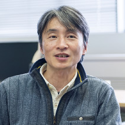
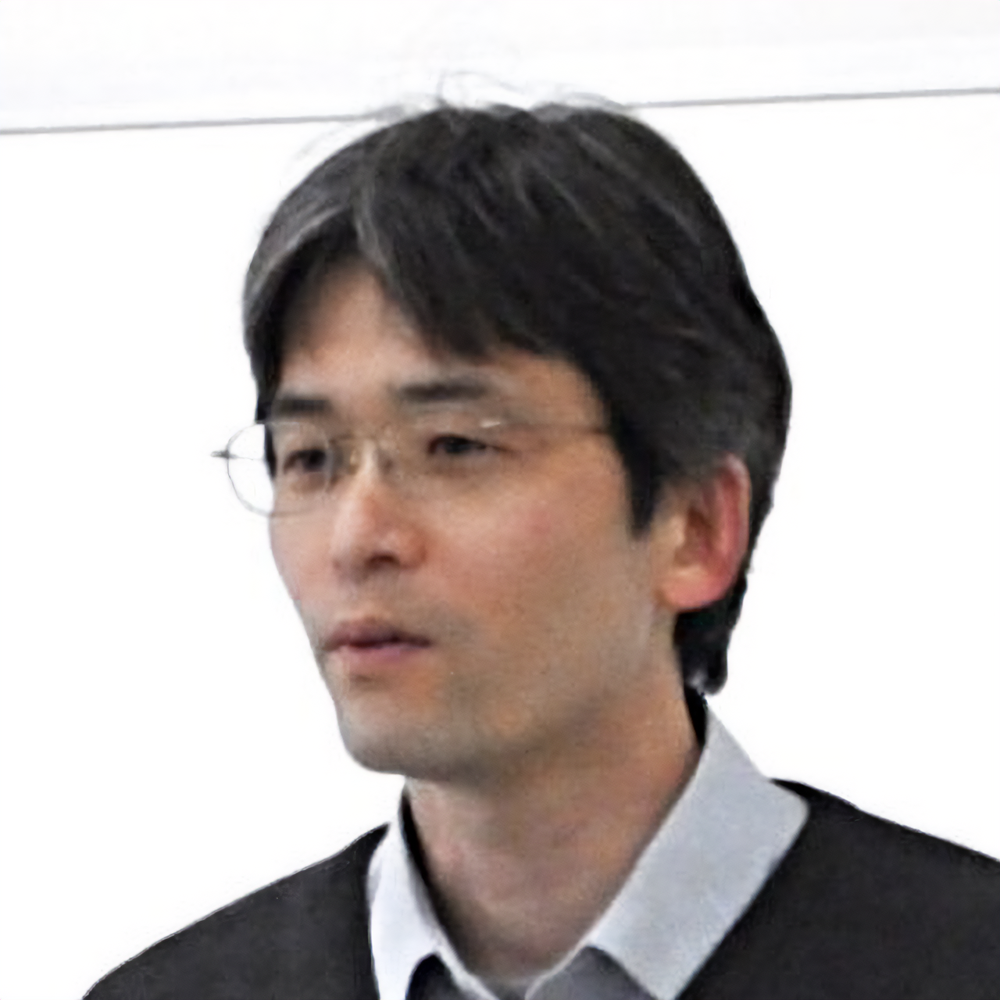
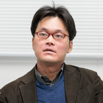
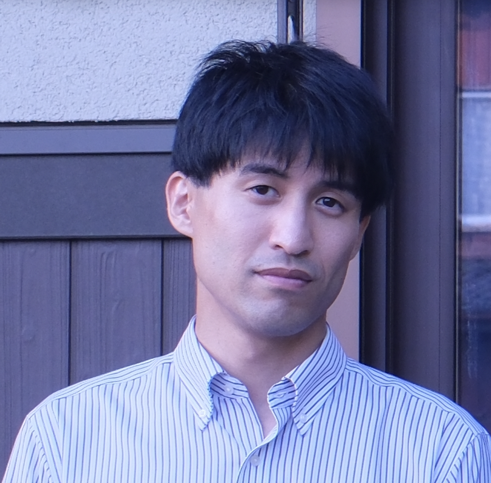
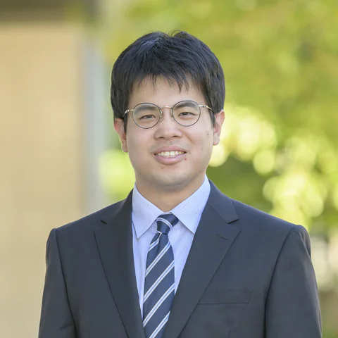
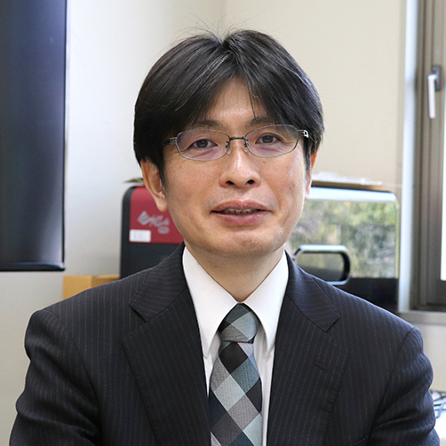

教員紹介
| データサイエンス分野 | 大久保 寬 片山 薫 高間 康史 田川 憲男 相馬 隆郎 横山 昌平 草野 翼 柴田 祐樹 石川 博 |
| 人間情報・知能情報分野 | 岡本 正吾 西内 信之 下川原 英理 福井 隆雄 佐藤 正平 福地 庸介 伏木田 稚子 |
| ネットワークサイエンス分野 | 會田 雅樹 朝香 卓也 松田 崇弘 酒井 和哉 中嶋 一貴 藤田 八郎 |
| コンテンツ情報処理分野 | 小野 順貴 西川 清史 塩田 さやか 杉村 大輔 中嶋 大志 貴家 仁志 藤吉 正明 |
| 情報システムアーキテクチャ分野 | 鈴木 敬久 福本 聡 三浦 幸也 渋谷 正弘 肖 霄 伊澤 侑祐 |
教授
會田 雅樹
情報ネットワーク/オンラインソーシャルネットワーク/ネットワーク科学/自律分散制御/社会ネットワーク分析
朝香 卓也
サイバーフィジカルシステム/情報ネットワークセンサネットワーク/IoT/データセントリックサービス
大久保 寬
波動情報工学/音響工学/信号処理/数値解析/波動センシング/HPC/可視化技術/防災科学
岡本 正吾
ハプティクス/XR・VR/感性科学・工学/支援システム/フードサイエンス
小野 順貴
音響信号処理/マイクロホンアレイ/音源分離/音光変換/環境音認識/機械学習
片山 薫

3次元モデル/3次元データ解析/検索/CAD/データ工学
鈴木 敬久
大規模計算の高速化/数理モデルとAIによる社会的課題解決/大規模システム設計・統合/先進的ネットワークストレージ
高間 康史
Webインテリジェンス/情報可視化/情報推薦システム/インタラクティブシステム/データマイニング
田川 憲男
コンピュータビジョン/画像・映像解析/超音波イメージング/統計的機械学習
西内 信之
ヒューマンインタフェース/ユーザビリティ/ユーザエクスペリエンス/バイオメトリクス
西川 清史
信号処理/画像・動画処理/深層ニューラルネットワーク
福本 聡
ディペンダブルコンピューティング/セキュアコンピューティング/分散システム/人工知能応用
松田 崇弘
情報通信ネットワーク/無線ネットワーク/通信品質/ネットワーク診断/ネットワーク計測
三浦 幸也
VLSI(集積回路)/設計&テスト/高信頼化システム/ディペンダブルコンピューティング
准教授
酒井 和哉
ネットワークセキュリティ/情報セキュリティ/人工知能セキュリティ/分散システム/強化学習
塩田 さやか
音声情報処理/音声バイオメトリクス/なりすまし音声検出/音声プライバシー/深層学習
渋谷 正弘
デジタルツイン(バーチャルツイン)/DX/カイゼン
下川原 英理
知能情報処理/マルチモーダルインタラクション/ヒューマン・ロボット・インタラクション/loT/ ソーシャルロボティクス
肖 霄
ソフトウェア信頼性評価/システム性能評価/ネットワーク最適化/数理モデリング/機械学習応用/環境エネルギー応用
杉村 大輔
画像認識/画像処理/計算撮像/機械学習
相馬 隆郎

二足歩行ロボット/対話システム応用/画像認識/機械学習システム
福井 隆雄

認知科学/知覚と行為/仮想空間と現実空間/個人特性/視線計測/身体動作の三次元動作解析
横山 昌平
データ科学/データ工学/ソーシャルビッグデータ分析/時空間情報
助教
伊澤 侑祐
プログラミング言語/プログラミング環境/ソフトウェア
草野 翼
時間周波数解析/ 関数データ解析/音響信号処理/バイノーラル再生
佐藤 正平
ウェアラブル/モバイルヘルス/医工学/生体信号処理/機械学習
柴田 祐樹

情報 推薦/人工知能/最適化
中嶋 一貴

複雑系/ネットワーク科学/社会ネットワーク分析/データマイニング
中嶋 大志
音響信号処理/アレイ信号処理/ブラインド音源分離
福地 庸介
人-AIインタラクション/計算論的認知科学/ヒューマン-エージェントインタラクション/認知動力学
藤田 八郎
通信システム/符号/暗号
特別先導教授
石川 博
データサイエンス/データ工学/生成AI/科学的方法論/仮説生成・解釈/ビッグデータ
貴家 仁志
信号処理/画像・映像・音声処理/データ圧縮/ソーシャルメディア/マルチメディアセキュリティ・フォレンジックス
大学院兼担教員
教授
藤吉 正明

画像処理/メディア情報セキュリティ/付加価値メディア情報処理/サイバー・フィジカル連携
伏木田 稚子
教育工学/認知心理学/情報リテラシー教育/ゼミナール教育/定量分析/質的データ分析